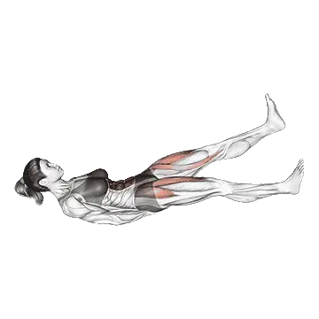

Battements de jambes
Battements de jambes est un exercice de tronc axé sur Grand droit, Obliques externes. Consulte les répétitions moyennes et les standards de répétitions sur une seule page.

Répétitions moyennes : Intermédiaire
Repère pour une personne de niveau intermédiaire.
Répétitions moyennes de Battements de jambes
| Niveau | ||
|---|---|---|
| Débutant | < 1 | < 1 |
| Novice | 16 | 10 |
| Intermédiaire | 73 | 35 |
| Avancé | 153 | 67 |
| Élite | 252 | 103 |
Note : ces valeurs sont des estimations des répétitions moyennes réalisables sur une série. Elles peuvent varier selon le poids de corps, l'amplitude, le tempo et d'autres facteurs personnels. Consulte les données détaillées dans le tableau ci-dessous.
Standards de répétitions de Battements de jambes
Hommes par poids de corps (kg) [Répétitions]
| Poids de corps | Débutant | Novice | Intermédiaire | Avancé | Élite |
|---|---|---|---|---|---|
| 50 | < 1 | 20 | 94 | 201 | 334 |
| 55 | < 1 | 19 | 88 | 188 | 311 |
| 60 | < 1 | 18 | 83 | 176 | 291 |
| 65 | < 1 | 17 | 79 | 166 | 273 |
| 70 | < 1 | 16 | 75 | 157 | 258 |
| 75 | < 1 | 15 | 71 | 149 | 244 |
| 80 | < 1 | 15 | 68 | 142 | 232 |
| 85 | < 1 | 14 | 65 | 135 | 221 |
| 90 | < 1 | 13 | 62 | 129 | 211 |
| 95 | < 1 | 12 | 59 | 124 | 202 |
| 100 | < 1 | 12 | 57 | 119 | 193 |
| 105 | < 1 | 11 | 55 | 114 | 186 |
| 110 | < 1 | 10 | 52 | 110 | 178 |
| 115 | < 1 | 10 | 50 | 106 | 172 |
| 120 | < 1 | 9 | 48 | 102 | 166 |
| 125 | < 1 | 9 | 47 | 98 | 160 |
| 130 | < 1 | 8 | 45 | 95 | 155 |
| 135 | < 1 | 8 | 43 | 92 | 150 |
| 140 | < 1 | 8 | 42 | 89 | 145 |
Hommes par âge [Répétitions]
| Âge | Débutant | Novice | Intermédiaire | Avancé | Élite |
|---|---|---|---|---|---|
| 15 | < 1 | 9 | 58 | 126 | 210 |
| 20 | < 1 | 14 | 70 | 149 | 245 |
| 25 | < 1 | 16 | 73 | 153 | 252 |
| 30 | < 1 | 16 | 73 | 153 | 252 |
| 35 | < 1 | 16 | 73 | 153 | 252 |
| 40 | < 1 | 16 | 73 | 153 | 252 |
| 45 | < 1 | 13 | 68 | 144 | 237 |
| 50 | < 1 | 11 | 62 | 133 | 221 |
| 55 | < 1 | 8 | 55 | 121 | 202 |
| 60 | < 1 | 6 | 47 | 108 | 182 |
| 65 | < 1 | 2 | 40 | 95 | 162 |
| 70 | < 1 | < 1 | 33 | 82 | 142 |
| 75 | < 1 | < 1 | 26 | 70 | 124 |
| 80 | < 1 | < 1 | 20 | 60 | 108 |
| 85 | < 1 | < 1 | 15 | 50 | 93 |
| 90 | < 1 | < 1 | 11 | 42 | 81 |
Femmes par poids de corps (kg) [Répétitions]
| Poids de corps | Débutant | Novice | Intermédiaire | Avancé | Élite |
|---|---|---|---|---|---|
| 40 | < 1 | 8 | 37 | 75 | 120 |
| 45 | < 1 | 9 | 37 | 73 | 114 |
| 50 | < 1 | 10 | 37 | 71 | 109 |
| 55 | < 1 | 11 | 36 | 68 | 105 |
| 60 | < 1 | 11 | 36 | 66 | 100 |
| 65 | < 1 | 11 | 35 | 64 | 96 |
| 70 | < 1 | 11 | 34 | 62 | 92 |
| 75 | < 1 | 11 | 33 | 59 | 89 |
| 80 | < 1 | 11 | 32 | 58 | 86 |
| 85 | < 1 | 11 | 31 | 56 | 83 |
| 90 | < 1 | 11 | 30 | 54 | 80 |
| 95 | < 1 | 11 | 30 | 52 | 77 |
| 100 | < 1 | 10 | 29 | 51 | 75 |
| 105 | < 1 | 10 | 28 | 49 | 72 |
| 110 | < 1 | 10 | 27 | 47 | 70 |
| 115 | < 1 | 10 | 26 | 46 | 68 |
| 120 | < 1 | 10 | 25 | 45 | 66 |
Femmes par âge [Répétitions]
| Âge | Débutant | Novice | Intermédiaire | Avancé | Élite |
|---|---|---|---|---|---|
| 15 | < 1 | 5 | 26 | 53 | 83 |
| 20 | < 1 | 9 | 34 | 64 | 99 |
| 25 | < 1 | 10 | 35 | 67 | 103 |
| 30 | < 1 | 10 | 35 | 67 | 103 |
| 35 | < 1 | 10 | 35 | 67 | 103 |
| 40 | < 1 | 10 | 35 | 67 | 103 |
| 45 | < 1 | 9 | 32 | 62 | 96 |
| 50 | < 1 | 7 | 28 | 56 | 88 |
| 55 | < 1 | 4 | 24 | 50 | 80 |
| 60 | < 1 | 1 | 19 | 43 | 70 |
| 65 | < 1 | < 1 | 15 | 36 | 60 |
| 70 | < 1 | < 1 | 10 | 29 | 51 |
| 75 | < 1 | < 1 | 7 | 23 | 43 |
| 80 | < 1 | < 1 | 3 | 17 | 35 |
| 85 | < 1 | < 1 | < 1 | 13 | 28 |
| 90 | < 1 | < 1 | < 1 | 9 | 23 |
Note : les valeurs du tableau sont une référence des répétitions possibles sur une série. Utilise les données par poids de corps pour estimer la charge relative et les données par âge pour observer les tendances.
Suivi et analyse dans l'app Shiba
Consultez poids, répétitions et progression au même endroit.
Comment lire le tableau
| Niveau | Description | Répartition |
|---|---|---|
| Débutant | Maîtrise la bonne technique et s'entraîne régulièrement depuis au moins 1 mois. | Bas 5% |
| Novice | S'entraîne régulièrement depuis au moins 6 mois. | Top 80% |
| Intermédiaire | S'entraîne régulièrement depuis au moins 2 ans. | Top 50% |
| Avancé | S'entraîne régulièrement depuis plus de 5 ans. | Top 20% |
| Élite | S'entraîne spécifiquement sur cet exercice depuis plus de 5 ans. | Top 5% |